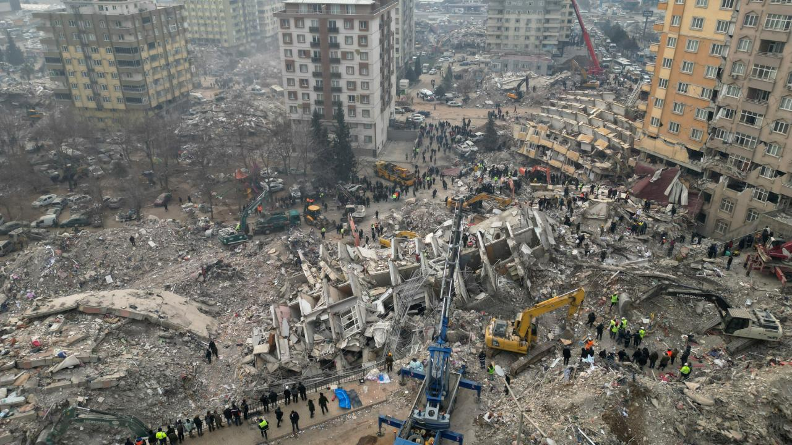

Deprem, yer sarsıntısı, seizma veya zelzele, yer kabuğunda beklenmedik bir anda ortaya çıkan enerji sonucunda meydana gelen sismik dalgalanmalar ve bu dalgaların yeryüzünü sarsması olayıdır. Sismik aktivite ile kastedilen, meydana geldiği alandaki depremin frekansı, türü ve büyüklüğüdür. Depremler sismograf ile ölçülür. Bu olayları inceleyen bilim dalına da sismoloji denir. Depremin büyüklüğü Moment magnitüd ölçeği (ya da eskiden kullanımda olan Richter ölçeği) ile belirlenir. Bu ölçeğe göre 3 ve altı büyüklükteki depremler genelde hissedilmezken 7 ve üstü büyüklükteki depremler yıkıcı olabilir. Sarsıntının şiddeti Mercalli şiddet ölçeği ile ölçülür. Depremin meydana geldiği noktanın derinliği de yıkım kuvveti üzerinde etkilidir, bu sebepten yeryüzüne yakın noktalarda gerçekleşen depremler daha çok hasara neden olmaktadır.[1]
Turkiyede olan Zelzelede cox insan yaralandi ve oldu bunu ardindan her kes artig hemin qorxunc gunu unutmaga calisir amma insanlar yene qinanir onu derk etmirler ki Uca Yaradan bir derd verirse bu derdi unutdurmag ucun de derman gonderir uzun sozun qisasi Allah zelzelede olen her kese rehmet etsin